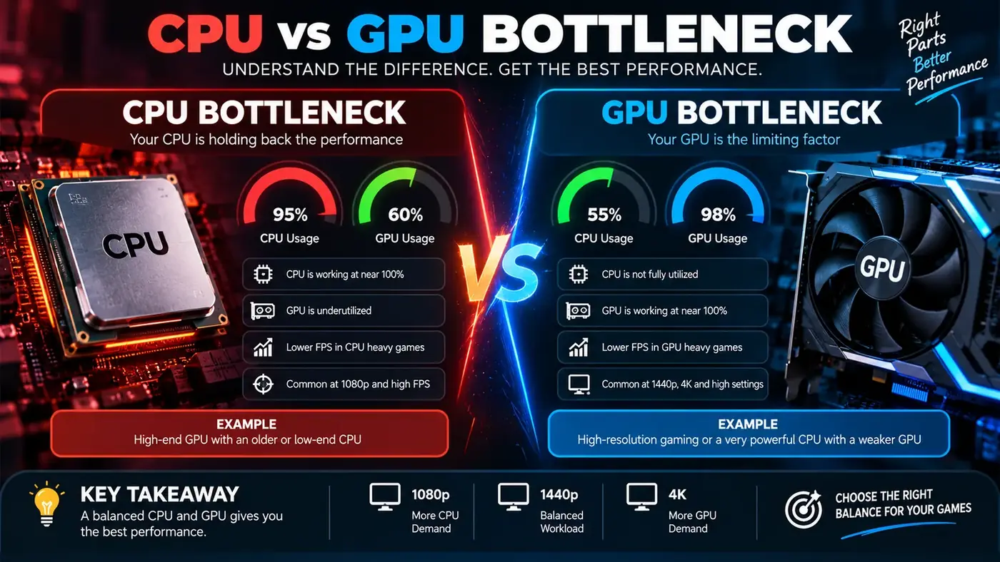

CPU Bottleneck vs GPU Bottleneck: How to Tell Which Component Is Limiting Your PC
Understanding the relationship between your processor and graphics card is the key to building a balanced gaming PC and making smart upgrade decisions. Here is how to diagnose exactly what is limiting your frame rate.
The Quick Answer
In simple terms, a PC bottleneck occurs when one component in your computer operates much slower than the others, preventing the faster parts from reaching their full potential. In gaming, this usually involves a mismatch between the CPU and GPU.
If your GPU utilization is pinned at 95–100% while gaming, you have a GPU bottleneck. This is normal and usually the ideal scenario for a gaming PC because it means you are getting every bit of performance you paid for out of your graphics card.
If your GPU utilization falls well below 90% (with no frame caps applied), and you experience stuttering or inconsistent frame rates, you likely have a CPU bottleneck. Your processor cannot prepare data fast enough to keep the graphics card busy.

Deep Dive: What is a CPU Bottleneck?
To understand a CPU bottleneck, it helps to know how a game frame is generated. Before your graphics card can draw a beautiful explosion on your screen, the CPU has to do the background math. It calculates physics, AI behavior, player input latency, and network data. Once the CPU finishes this math, it sends a "draw call" to the GPU.
If you have an older or weaker processor paired with a very powerful graphics card (like pairing an Intel Core i3 with an RTX 4080), the CPU cannot generate these draw calls fast enough. The GPU will finish rendering a frame and then sit idle, waiting for the CPU to tell it what to do next.
Symptoms of a CPU-Limited PC
- Low GPU Usage: Monitoring software shows your GPU usage hovering at 60%, 70%, or bouncing around erratically.
- High Individual CPU Core Usage: Even if overall CPU utilization is only 40%, one or two specific CPU cores might be maxed out at 100%. Many game engines still rely heavily on single-thread performance.
- Poor 1% Lows and Stuttering: While your average FPS might seem okay, the game will feel choppy. Your "1% lows" (the slowest 1% of frames generated) will drop dramatically, causing noticeable stutters during complex scenes or heavy action.
- Poor Frame-Time Consistency: The time it takes to render each individual frame (frame time) will spike up and down unpredictably.
Deep Dive: What is a GPU Bottleneck?
A GPU bottleneck is essentially the opposite scenario. The CPU is fast enough to calculate all the physics and AI, and it fires off draw calls rapidly. However, the graphics card is working as hard as it can to render the complex textures, shadows, and lighting, and it simply cannot keep up with the CPU's pace.
While the word "bottleneck" has a negative connotation, a GPU bottleneck is generally what you want in a dedicated gaming PC. It means your expensive graphics card is fully engaged, and the system is operating predictably.
Symptoms of a GPU-Limited PC
- High GPU Usage: Your graphics card consistently operates at 95% to 100% utilization.
- Consistent Frame Pacing: Although the frame rate might be lower than you want, it will generally feel smooth and consistent without sudden stutters.
- Lower CPU Usage: Your processor is not breaking a sweat because it spends its time waiting for the graphics card to finish rendering.
How Resolution and Graphics Settings Change Everything
One of the most important concepts to grasp is that bottlenecks are not static. They change dramatically depending on the game, your settings, and specifically, your display resolution.
It is entirely possible to have a severe CPU bottleneck at 1080p, but a pure GPU bottleneck at 4K on the exact same computer.
Why Resolution Matters
When you increase the resolution (e.g., moving from 1080p to 1440p or 4K), you drastically increase the workload on the GPU. It has to push millions more pixels per frame. However, the CPU's workload remains roughly the same—it still has to calculate the same AI and physics regardless of how many pixels are on the screen.
Because the GPU is working harder at 4K, it takes longer to render each frame. This lowers the total FPS (Frames Per Second). Because the FPS is lower, the CPU has more time to prepare the next set of instructions. The workload shifts, and the CPU bottleneck disappears.
Comparison Table: How Workloads Shift
| Resolution | FPS Potential | GPU Workload | CPU Dependency | Common Bottleneck |
|---|---|---|---|---|
| 1080p (FHD) | Very High (200+ FPS) | Low/Medium | Very High (needs fast cores) | Usually CPU |
| 1440p (QHD) | High (100-144 FPS) | High | Medium | Balanced / Minor GPU |
| 4K (UHD) | Moderate (60-100 FPS) | Extreme | Low | Almost always GPU |
Practical Diagnosis: A Step-by-Step Checklist
To accurately determine what is holding your system back, you need to monitor it while playing the games you actually care about. Do not rely solely on artificial synthetic benchmarks.
- Download Monitoring Software: Install a tool like MSI Afterburner with RivaTuner Statistics Server, HWiNFO64, or use the built-in Xbox Game Bar (Win+G) or NVIDIA GeForce Experience overlay.
- Configure the On-Screen Display (OSD): Set the tool to display: GPU Usage, overall CPU Usage, per-core CPU Usage (crucial), RAM usage, and VRAM usage.
- Remove Frame Caps: Temporarily turn off V-Sync in the game settings and ensure you do not have any global FPS limiters active in your driver control panel. A frame cap will artificially lower GPU usage, making it look like a CPU bottleneck.
- Play a Demanding Game: Load up a game you frequently play, ideally something visually complex or open-world. Play for at least 10 minutes to let the system settle.
- Observe the Data:
- If GPU usage is consistently > 95%, you are GPU limited.
- If GPU usage is < 90% and one or more CPU cores are at 95-100%, you are CPU limited.
- If neither the GPU nor the CPU is maxed out, check your RAM, temperatures (to ensure you aren't experiencing thermal throttling), or consider that the game engine itself might be poorly optimized.
The Limitations of Percentage-Based Estimates
Tools like our PC bottleneck calculator are incredibly useful for planning a new build or getting a baseline understanding of whether a CPU GPU pairing makes sense. A calculator can immediately flag that pairing a Ryzen 9 7950X3D with an older GTX 1060 is a massive imbalance.
However, it is vital to understand that a bottleneck percentage is an estimate based on hardware tier matching and generalized performance data. Actual, real-world bottlenecks depend heavily on the specific software you are running.
For example, a heavily modded simulation game like Microsoft Flight Simulator or a grand strategy game like Stellaris will almost always push a system into a CPU bottleneck, regardless of what a calculator estimates. Conversely, a visually stunning single-player RPG like Cyberpunk 2077 with path tracing enabled will crush almost any GPU on the market at 4K, making the CPU largely irrelevant.
When to Upgrade the CPU vs the GPU
Upgrading hardware is expensive, so it is important to target the correct component.
When a CPU Upgrade Makes Sense
- You play competitive esports titles (CS2, Valorant, Apex Legends) at 1080p and need the absolute highest frame rate (e.g., 240Hz or 360Hz) for the lowest input latency.
- You experience severe stuttering and poor 1% lows in open-world or CPU-heavy simulation games.
- Your GPU usage consistently drops below 70% in modern games while frame rates are unsatisfactory.
- You also use your PC for heavy productivity tasks like video editing, 3D rendering, or code compilation.
When a GPU Upgrade Makes Sense
- You want to transition from playing at 1080p to a higher resolution like 1440p or 4K.
- You want to turn graphics settings up to "Ultra" or enable demanding features like Ray Tracing in AAA single-player games.
- Your GPU is constantly maxed out at 100%, but your frame rate is consistently below your monitor's refresh rate (e.g., struggling to hit 60 FPS).
Common Mistakes to Avoid
- Overspending on the CPU: Many new builders pair a top-tier processor (like a Core i9) with a mid-range graphics card for gaming. For a dedicated gaming PC, it is almost always better to allocate more budget to the GPU.
- Ignoring RAM and Storage: A fast CPU and GPU can still be bottlenecked if your system runs out of system memory (causing a RAM bottleneck) or if you are running games off an old mechanical hard drive instead of a fast NVMe SSD.
- Chasing 0% Bottleneck: There is always a bottleneck somewhere in a computer system. If there wasn't, you would have infinite performance. The goal is not zero limitation; the goal is to ensure the limitation is placed on the component you want (usually the GPU) and that the resulting performance meets your needs.
Conclusion
Understanding the dynamic between the CPU and GPU is fundamental to PC performance optimization. By monitoring your system's behavior across different resolutions and workloads, you can accurately diagnose whether you are facing a CPU or GPU bottleneck.
Before spending money on upgrades, test your system. If you want a quick baseline estimate of how your current or planned hardware pairs up, use our PC bottleneck calculator. And remember, if you are struggling with low performance, there are often ways to mitigate the issue before opening your wallet, which you can read about in our guide on how to fix a PC bottleneck.
Frequently Asked Questions
What is a CPU bottleneck?
A CPU bottleneck happens when the processor cannot supply data and draw calls to the graphics card fast enough, forcing the GPU to wait. This results in stuttering, poor frame-time consistency, and underutilized graphics hardware.
What is a GPU bottleneck?
A GPU bottleneck occurs when the graphics card is working at 100% capacity but still cannot render frames as quickly as the CPU can supply them. In gaming PCs, this is generally the desired state because it means you are getting maximum performance out of your graphics hardware.
How do I know which component is limiting my FPS?
You can monitor your system using tools like MSI Afterburner or Xbox Game Bar. If your GPU usage is constantly near 95-100%, you have a GPU bottleneck. If your GPU usage drops significantly below 90% and specific CPU cores are pinned near 100%, you likely have a CPU bottleneck.
Does higher resolution reduce CPU bottlenecks?
Yes. Increasing the resolution from 1080p to 1440p or 4K makes the game harder for the GPU to render. This lowers the total frame rate, which gives the CPU more time to prepare each frame, effectively shifting the bottleneck away from the CPU and onto the GPU.
Does a bottleneck calculator give exact results?
No. A PC bottleneck calculator provides a useful estimate based on hardware tier matching. However, actual bottlenecks vary wildly depending on the specific game engine, resolution, graphics settings, and background tasks.
Why does my GPU usage stay below 100%?
If your GPU usage is below 100%, it means another component is holding it back, or you have a frame rate cap enabled. The most common cause is a CPU bottleneck, but it could also be a RAM limitation, thermal throttling, or a game engine issue.
Does upgrading the GPU always increase FPS?
Not always. If your system is experiencing a severe CPU bottleneck, buying a faster GPU will not increase your FPS because the new GPU will simply spend even more time waiting for the processor. You only see major FPS gains from a GPU upgrade if your current GPU is the primary limiting factor.